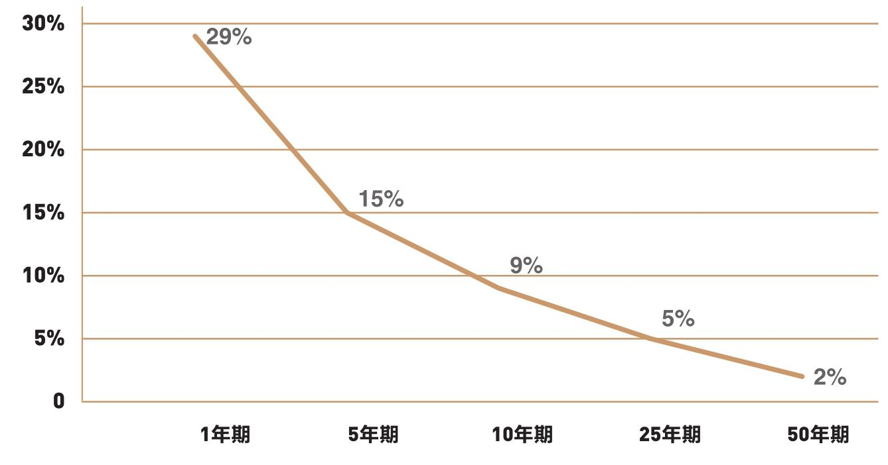
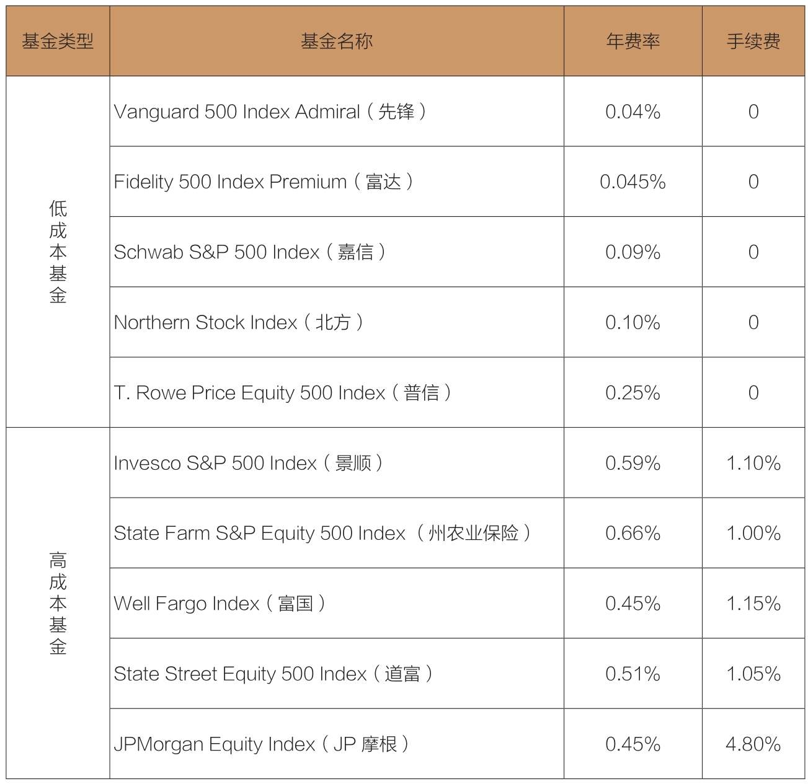

数年前，有人曾经问一位富国银行的代表：“你们的基金凭什么收取如此高的费用？”这位代表回答：“你不了解，这是我们的现金牛。”
看看标准普尔500指数基金在过去25年的卓越表现，一切便清晰明了了，你还等什么？
在前面几章中，我们学到了什么？
◆成本很重要（第5～7章）。
◆不能基于过往的业绩挑选股票基金（第10章）。
◆基金收益趋向均值回归（第11章）。
◆即使抱有善意的投资顾问，也不可靠（第12章）。
如果说低成本是利润之源（我想，任何分析家、学者或业内专家都不会否认低成本的好处），那么把投资目标定位于所有基金中成本最低的指数基金——一只拥有整个股票市场的基金，岂不是理所当然吗？很多大型指数基金的费率均低于0.04%，而且换手成本趋近于0。它们的总成本每年仅有4个基点(1)，比第5章中成本最低的基金（91个基点）还要低96%。
低成本的作用毋庸置疑。正如前文所述，在现实世界中，只要看看标准普尔500指数基金在过去10年及25年的卓越表现，一切便清晰明了了。指数基金取得的巨大成功显而易见，也无可争议。在未来10年的股市收益预期并不乐观的情况下，我想用简单公正的数学规则，结合统计数据，归纳一下能在未来帮助你的要点。
首先，我们可以运用统计方法来估算一下主动型基金在不同时段胜过被动型指数基金的概率。这个复杂的检验过程被称为蒙特·卡洛模拟(2)。关于这种模拟，我们需要针对某些变量作出假设，包括股票基金收益波动率、基金收益与股票市场收益的差异程度，以及股票投资的总成本。在这里，我们假设每年的指数基金成本为0.25%、主动型基金成本为2%（许多指数基金成本低于0.25%，也有许多主动型基金成本高于2%）。
最终的模拟结果：按1年期计算，约29%的主动型基金收益超过指数基金；按5年期计算，约15%的主动型基金占优。然而，按50年的话，只有2%的主动型基金能胜过指数基金（见图13-1 ）。

图13-1 主动型基金收益胜过被动型指数基金的概率
未来的实际结果到底会怎样呢？当然，我们无从知晓，但过去25年的情况是客观存在的事实。我们都知道，以往的25年中，就像我们在第10章里看到的，355只基金中，仅有2只基金的年均收益率高于市场指数基金2%以上。而且其中的某个赢家，也在20年后失去了它的优势。所以说，我们的统计结果是合情合理的。这个简单而公正的数学方法提示我们，一定要重视指数基金。指数基金不仅需要扮演重要角色，更应该占据核心地位。
无论如何，在目前股票和债券市场一蹶不振，而且有可能继续萎靡下去的情况下，成本将比以往任何时候都显得更重要，尤其是当我们知道，无论金融市场创造了多少收益，都不可能被全体共同基金获取。
即使收益已经这么少了，大多数投资者依然拿不到。因此，正如我经常说的那样：“在节俭王国里，简洁就是国王。”指数基金符合这一要求。
再重申一次：随着时间的推移，所有这些令人生厌的成本——基金费率、手续费、换手成本、税金，以及生活成本的缓慢提高（通货膨胀）——从长期来看，都在真真切切地侵蚀着我们的投资价值。只有在极少数的情况下，投资者才能真的拿到基金公布的收益。
关于未来几年的市场收益，我的估算可能是错误的——或许太高，也可能太低。然而，基金究竟能从市场收益中取得多少份额，又或投资者实际能得到多少收益，我对这几个问题的看法有一个共同点：它们不代表我的个人看法，而是依赖于冷酷但公正的数学规则。
正是这些数学规则，让我们寻找绩优基金的努力如同大海捞针。一旦你忽略这些规则，就会陷入危机之中。
通往投资成功的路上充满了危险的急弯和洼坑，千万不要忘记用简单的数学规则来避开这些危险。因此，要尽可能分散投资，减少投资费用，不要让情绪使你陷入大多数投资者经历的灾难。相信你的常识，关注涵盖整个股票市场的指数基金。认真考虑你的风险承受能力,明确你对所购股票的收益预期，然后，坚持自己的策略，不要动摇。
还有一点必须补充，并非所有指数基金的结构都一样。即便以指数为基础的投资组合基本相同，它们的成本也有可能相去甚远。有些基金的费率微乎其微，可以忽略不计；有些基金的费率高得令人难以接受；有些基金不收取手续费；也有近1/3的基金收取前期费，而且可以选择在5年（常见的支付年限）内分期支付佣金；还有一些基金则需支付标准的经纪佣金。
在10家大型基金组织以标准普尔500指数为基础发行的基金中，成本最低的基金与成本最高的基金之间的成本差居然达到了1.3 %（见表13-1）。更糟糕的是，高成本指数基金甚至还会向投资者预收手续费。
表13-1 标准普尔500指数基金的成本

我们可以看出，即使在低成本标准普尔500指数基金中，费用差异也很大。先锋基金的费率仅有0.04%，而普信基金则为0.25%。虽然收费低于高成本指数基金，但普信基金也算不上低成本。对过去25年进行复合计算，假设年均收益率为6%，初始投资为10 000美元，普信基金将增长为40 458美元，而先锋基金将成长为42 516美元，比前者多2 058美元。是的，看似微小的成本差异，也会带来显著差别。
目前，大约有40只传统指数基金以跟踪标准普尔500指数为投资策略。令人吃惊的是，在这些基金中，14只基金需要预收手续费，介于1.5%～5.75%。明智的投资者应该选择那些没有手续费且营运成本低的指数基金。这些成本直接影响基金股东能得到的净收益。
1975年，先锋基金创立了第一只指数基金。9年过后，第二只指数基金——富国银行的股票指数基金才出现，创立于1984年1月，其后的表现可以与先锋500指数基金作比较。
两只基金均选择标准普尔500指数作为基准。上市几个月后，先锋500指数基金就取消了销售佣金，目前投资金额超过10 000美元的投资者的年均费率也仅为0.04%。
相比之下，富国银行基金一直收取5.5%的手续费，此后年均费率为0.8%（目前为0.45%）。因此，它从一开始就落后于先锋基金，而且每过一年，落后就更多一点。
1984—2017年，先锋基金的价值提升了27%。如果在1984年用10 000美元投资先锋基金，那么到2017年会增长到294 900美元；而把10 000美元投入富国银行的股票指数基金，会增长到232 100美元。因此，明智的投资者将挑选有信誉的基金公司，购买其成本最低的指数基金。
数年前，有人曾经问一位富国银行的代表：“你们的基金凭什么收取如此高的费用？”这位代表回答：“你不了解，这是我们的现金牛。”换句话说，它能为基金经理带来丰厚的利润。只要精心为你的投资组合挑选成本最低的基金，你就可以确保指数基金是在帮你赚钱，而不是在帮基金经理赚钱。
传统思维认为，指数化只适用于高效的市场。例如，标准普尔500指数收录的美国大型成分股市场，而在小型股或海外股票市场，主动型基金会表现更好。然而，事实并非如此。
表3-3显示，指数化适合于任何情况。结果必然如此。其原因在于，无论市场是有效还是无效，市场某一板块的全体投资者只能赚到这个板块的收益。在无效市场上，最成功的基金经理可能会创造非同寻常的巨额收益。但永远不要忘记：作为一个整体，市场中任何一个板块的投资者都只能取得平均收益，而且事实也必将如此。
国际型基金也一样。有些人认为，国际基金更容易在无效市场中获胜，但事实并非如此。标准普尔指出，在以往的15年里，国际指数基金（涉及全球市场，包括较少的美国股票）的收益比主动型股票基金高出89%。
同样，标准普尔新兴市场指数（S&P Emerging Markets Index）的收益率比普通新兴市场股票基金高出88%。由此可见，无论市场是否有效，指数工具都能发挥作用。
注意：我们可以通过指数基金对某一特定市场板块进行有效的投资，但是，要用赌博的方法去预测哪个板块，归根到底也只是赌博。而赌博永远是输家的游戏。
为什么这么说呢？因为情绪和心理这两个因素，很有可能会给投资者的收益造成负面影响。不管一个板块的盈利如何，这个板块的投资收益都极有可能落后于大盘。无数的证据表明：最受欢迎的板块基金肯定是那些刚刚创造出辉煌业绩的基金。而追逐热门基金，往往是失败的开始。
因此，在挑选准备下赌注的市场板块时，一定要三思而后行。尽管选择低成本的指数基金也许不那么令人兴奋，但这绝对是让你走向最终胜利的决策，也是数学规则的体现。请记住以下几点：避免将问题复杂化，尽可能化繁为简，严控成本，你的投资必将走向繁荣。
你也许会认为，按照我的计算，在全部股票共同基金中居然只有2%能在50年内超过股票市场大盘，这样的结果太悲观了。既然如此，不妨看看迈克尔·莫布森（Michael Mauboussin）的计算结果。他是雷格·梅森资产管理公司首席投资战略专家、哥伦比亚商学院副教授，以及畅销书《魔鬼投资学》（More Than You Know）一书的作者。按照我2%的数据估计，在50只投资基金中，只有1只基金能在50年内超过市场大盘，但是按照莫布森的计算，一只基金在15年内连续战胜市场的概率只有1/223 000，至于能在21年内连续超过市场的基金，在3 100万只基金中才能找到1只。不管数字如何，有一点是相同的：战胜指数基金的可能性微乎其微。
现在，我们再来听听沃伦·巴菲特的黄金搭档查理·芒格怎么说。他用一个例子，语重心长地告诫我们应该规避复杂的投资，选择最简单的方案：
“近年来，大型慈善基金开始变得越来越复杂。某些捐赠基金设立了很多投资顾问，甚至还雇用了一批顾问帮它们选择投资顾问，以在不同类型的股票间分配资金，保证投资始终遵守事先确定的投资风格……第三类顾问是投资银行的证券分析师。”
“面对所有这些复杂的环节，只有一点是我们可以肯定的：投资管理的总成本，再加上大额频繁交易的摩擦成本，很容易就能达到基金净值的3%。总之，全部股票基金每年所承担的业绩损失，就是这些中间人带来的总成本……”
“因此，我们不得不面对这样一个无法回避的现实：在扣除这些经纪人拿走的份额后，半数投资者的回报将低于均值。要知道，仅仅这个均值的回报水平就足以让投资者感到抑郁烦恼了。聪明的办法就是通过指数化投资赶走这些顾问，降低投资换手率。”
(1)basis point，即“百分之零点零一”（0.01%）。它在计算利率、汇率、股票价格等范畴被广泛应用。
(2)Monte Carlo simulation，以长期，甚至是一个世纪内每个月的收益数据为研究对象，把这些收益数据随机拼凑在一起，再计算数千个假设组合的年收益率。